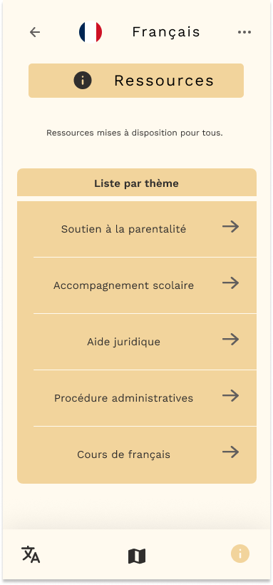

Voici l'ensemble de nos inspirations, références et de notre processus pour la création de notre application. Vous y trouverez le contexte dans lequel nous avons débuté nos recherches, notre cible, nos parcours et tests utilisateurs, ainsi que l'avenir de notre application.
En effectuant nos recherches, nous avons constaté que de nombreuses familles expatriées en France ne pouvaient pas bénéficier de différentes aides (PMI, associations) ainsi que de leurs droits en raison de la barrière linguistique. De plus, ils subissent une errance urbaine rendant très difficile leurs déplacements en ville.
Les familles expatriées en France peuvent parfois, pour des raisons indépendantes de leur volonté, manquer des informations essentielles qui pourraient les aider à s’intégrer. Notre application accompagne les familles expatriées nouvellement arrivées en France, même si elles ne maîtrisent pas encore le français à avoir accès au lieu et a leur droit.


Choisissez votre langue

Informez vous sur vos droits
Trouvez vos itinéraires

Filtrez vos besoins

Nom : Solène Moya
Profession: membre de l’asso la Croix Rouge, en alternance à l’emlyon
Date de l'échange : 23/01/2025
Solia est un projet qui prend ses racines dans le 7e arrondissement de Lyon, afin de tester sa pertinence et
l'impact de son rayonnement. Mais nous ne comptons pas nous arrêter là : Solia a de l'avenir en
étendant son impact aux arrondissements voisins.
Nous avons dégagé quelques pistes principales :
Technologies utilisées
Nos références